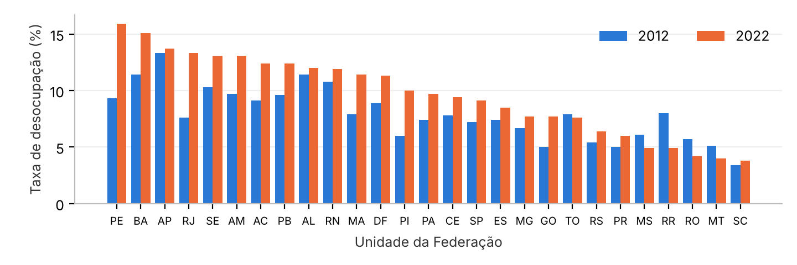
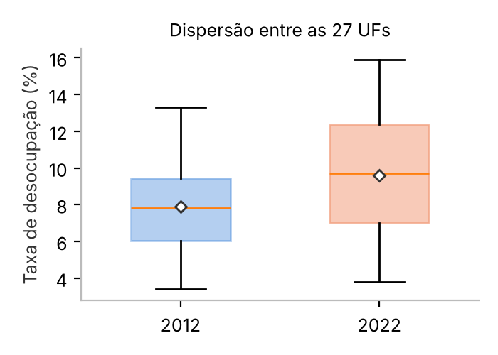
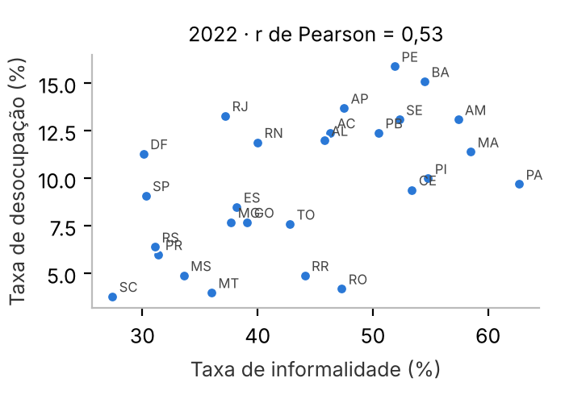

| Integrante | Parte | Indicador |
|---|---|---|
| Arthur de Souza, Clara Lima e Gustavo Henrique | Grupo | Tema 6 — Taxa de desocupação (2012 × 2022) e informalidade (PNAD Contínua) |
| Arthur de Souza | Individual | 1 — População por grupo de idade, sexo e raça (Censo 2022) |
| Clara Lima | Individual | 2 — Alfabetização por sexo e raça (Censo 2022) |
| Gustavo Henrique | Individual | 4 — Mulheres (Censo 2022, Projeções e Estatísticas de Gênero) |
A Ministra do Trabalho, o Sebrae e a Indústria querem saber onde o desemprego piorou entre 2012 e 2022, se os estados ficaram mais desiguais, onde está a informalidade e o que aconteceu com o emprego industrial e com o trabalho por conta própria. Usamos as médias anuais da PNAD Contínua para as 27 UFs, tratadas em Python (Pandas): leitura das tabelas do IBGE, conversão de números no padrão brasileiro, tratamento de símbolos (“-”, “...”), padronização das UFs e transformação para formato longo. As estatísticas (média, mediana, moda, quartis, IQR, amplitude, variância, desvio padrão, CV e outliers pela regra de 1,5×IQR) foram implementadas com as fórmulas de aula e conferidas contra o NumPy.

| Desocupação nas 27 UFs | 2012 | 2022 |
|---|---|---|
| Brasil (taxa nacional) | 7,4% | 9,6% |
| Média / mediana das UFs | 7,90 / 7,8 | 9,61 / 9,7 |
| Q1 – Q3 | 6,05 – 9,45 | 7,0 – 12,4 |
| IQR (p.p.) | 3,4 | 5,4 |
| Amplitude (p.p.) | 9,9 | 12,1 |
| Desvio padrão (p.p.) | 2,31 | 3,51 |
| Coef. de variação | 29,2% | 36,5% |
O desemprego subiu e ficou mais desigual: 22 das 27 UFs pioraram e todas as medidas de dispersão cresceram. Maiores altas: PE (+6,6 p.p.), RJ (+5,7) e PI (+4,0). Melhoraram RR, RO, MS, MT e TO.

Em 2022, a informalidade foi de 39,4% no Brasil, mas varia de 27,4% (SC) a 62,7% (PA) entre as UFs (mediana 44,1%, IQR 15,5 p.p., desvio padrão 9,76 p.p.). As maiores taxas estão no Norte e no Nordeste: PA, MA, AM, PI e BA. A correlação com a desocupação é r = 0,53 (positiva e moderada).

| Persona | Recomendação baseada nos dados |
|---|---|
| Ministério do Trabalho | Metas regionais (a dispersão entre UFs cresceu); prioridade a PE, BA, RJ e Nordeste; programas com recorte de gênero e raça; creches para ampliar a participação feminina; alfabetização de adultos ligada à qualificação. |
| Sebrae | Formalização (MEI, crédito orientado, compras públicas) em PA, MA, AM, PI e BA, onde a informalidade passa de 54%; empreendedorismo feminino nas áreas urbanas. |
| Indústria | O emprego industrial não voltou ao nível de 2012: há mão de obra disponível nos estados com mais desocupação. Qualificação (com etapas de letramento para 45+) e metas de mulheres em cargos técnicos e de liderança. |
Painel unificado em Streamlit (app.py) com menu de navegação, upload de CSV/XLSX, filtros por ano, região,
UF, sexo, cor ou raça e faixa etária, KPIs, barras comparativas, boxplots, histogramas, mapas por UF, abas de respostas às
perguntas de negócio e seção de notícias com imagens. Dashboards individuais em individuais/.
Fontes: IBGE — PNAD Contínua, Retrospectivas 2012-2024 (fev/2025) e 2012-2022; Censo Demográfico 2022; Anuário Estatístico do Brasil 2024; Estatísticas de Gênero, 3ª ed. (2024). A série de desocupação por UF foi reponderada pelo IBGE em 2024 (Brasil 2022 = 9,6%; na publicação original, 9,3%).